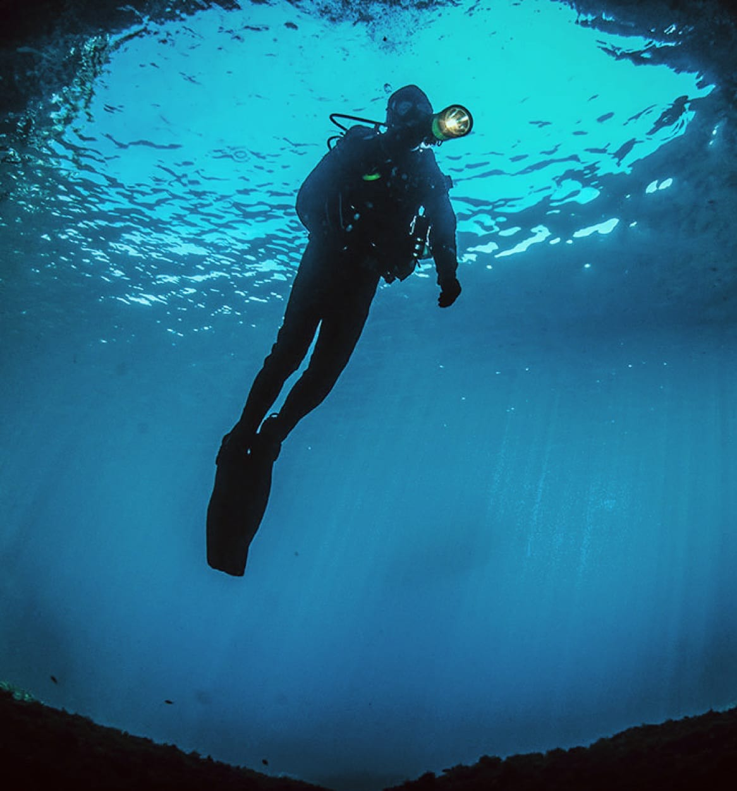

Početnici
Ronite odmah, iskustvo nije potrebno
Probno ronjenje je prvi boravak pod vodom u sigurnom i opuštenom okruženju, bez obveze da upišete tečaj. Ako se zaljubite u podmorje, nastavljate s jednim od početničkih SDI tečajeva.
- Discovery (probno ronjenje) od 60 €
- Open Water, Advanced, Rescue, Divemaster
- Ronjenje s plaže od 20 €